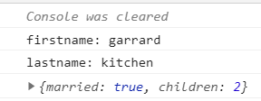

Modern-ish Javascript
April 5, 2020 - 4 mins read time - 715 words - garrardkitchen
This post includes a few notes on ECMA language features that I like as well as some info on memory leaking. I have no doubt that it will read disjointed; I started this eons ago and only now have I decided to publish it.
A simple reminder of what Node.js is …it is a set of APIs wrapped around the V8 Engine (written in c++) and is a high-performance JavaScript and WebAssembly engine.
ES2015 (ES6)
Class
I find Javascript messy at the best of times. When things are messy, personally I find it difficult to see the forest through the trees, and by this I mean, have I coded for all the *-cases (use/edge/corner)? Or worse, can I see the existing defects or bug breaders?! Then there’s the lack of readability.
I’ve discussed the use of classes with many Engineers and I have had a mixed reception but in the main, most said they preferred the simplicity of arrow functions. Not sure if there is a right or wrong answer to this (bit like the tabs or spaces…tabs, obvs!)… and at one time I will have agreed with the majority. Now though is a different story. Like so many others, I too have drank the cool-aid on TypeScript and now the only reason I can see myself opting for Javascript in the future is mainly for legacy reasons.
Coming from an OOP background, I naturally gravitate towards constructs like classes:
class Admin extends User
{
constructor (name) {
super(name)
this.initialize()
}
initialize = () => {}
}
Destructuring
const getProfile = () => {
return {firstname: "garrard", lastname: "kitchen", married: true, children: 2}
}
const {firstname, lastname, ...family} = getProfile()
console.log(`firstname: ${firstname}`)
console.log(`lastname: ${lastname}`)
console.log(family)
This would result in:

Arrow function
Arrow functions are a great addition to the ES spec! Their scope is purely inside of it’s closure and is not affected by the this context which may hoisted functions fall victum of.
initialize = () => {}
ES2016 (ES7) Language Features
The Decorator
Awesome addition to the EMCA family!
I’ve used this with great affect with Typescript, and mostly with NestJS solutions.
This is a contrived example on how you can use very basic decorator on a class function:
You must have configured your solution to use babel
class Content {
@link('nodejs', "<a href='https://nodejs.org/en/'>Node.js</a>")
html() {
return `This server language is called nodejs!`
}
}
function link(_find, _replace) {
return function(target, key, descriptor) {
var old = descriptor.value()
descriptor.value = () => {
var n = old.replace(_find, _replace)
return n
}
}
}
const m = new Content()
console.log(m.html())
output:
[nodemon] restarting due to changes...
[nodemon] starting `babel-node index.js`
This server language is called <a href='https://nodejs.org/en/'>Node.js</a>!
[nodemon] clean exit - waiting for changes before restart
package.json:
...
"scripts": {
"start": "nodemon --exec babel-node index.js"
},
...
"devDependencies": {
"@babel/core": "^7.12.3",
"@babel/node": "^7.12.1",
"nodemon": "^2.0.6"
},
"dependencies": {
"@babel/plugin-proposal-decorators": "^7.12.1"
}
...
.babelrc:
{
"plugins": [
["@babel/plugin-proposal-decorators", {
"legacy": true
}]
]
}
ES2018 (ES9)
Spread
I was reminded of something useful this morning (on the morning I wrote this, originally!) from a youtube video I was watching. JS passes objects (non-primitives) by reference, ergo, memory pointers, so it is possible to effect an object outside of it’s closure. So, imagine you return an array of objects (e.g. from a service to a controller). It is possible, to effect this array of objects from within the controller. One way I have found to avoid this is by using the spread syntax:
private readonly list: string[]
getList() {
return list
}
you can do this:
getList() {
return [...list]
}
Obvs, the 👆 is using an array but you can do this same with an object too {…list}
Memory
Functions arguments passed by value; always
See also spread 👆 to for advance on how to avoid memory leakage.
Further to the above, JS always passes by value (not reference) ALL augments to a function. This means that, if you pass in an argument (primitive or object) into a function, the closure is honoured and therefore any changes made to this value inside the closure is not reflected outside, example:
let v: string = "A"
getValue(v){
v = v + "B"
}
let result = getValue(v)
console.log(result) // output: AB
console.log(v) // output: A